Name Conventions, Models and Structures
The PROFOR toolbox utilizes the state space form to represent individual models. This section describes the structure and naming conventions used.
Contents
See the matlab code corresponding to this help file to run examples directly in Matlab.
The state space system
Observation equation:
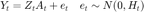
Transition equation:
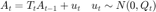
with:
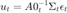
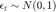
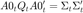
It is assumed that 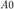 is a lower triangular matrix, with ones on the diagonal, and that both 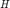 and 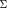 are diagonal matrices.
Hyperparameters and time variation
The model's hyperparameters: 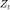, 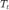, 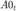, 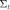, can be time varying. If so, they follow random walks (with independence across equations):
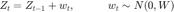
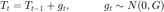
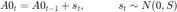
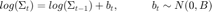
The idiosyncratic errors, 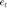, can either be i.i.d., or follow autoregressive processes:
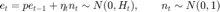
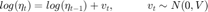
Finally, the state variables, 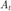, can be observed or unobserved.
In the most general form, there are hyperparameters: , , , , 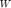, 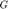, 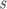,  , 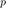, and 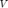.
, 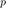, and 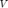.
Priors
With Bayesian methods, priors need to be defined. The following conventions are used:
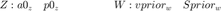
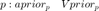
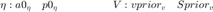
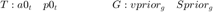
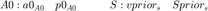
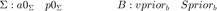
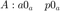
Here, 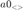 and 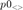 refer to the initial state and state covariance, respectively.
In cases when there are no time varying parameters (and no autoregressive processes for the idiosyncratic errors), the prior specifications are determined by:
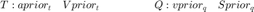
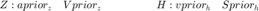